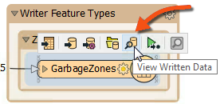
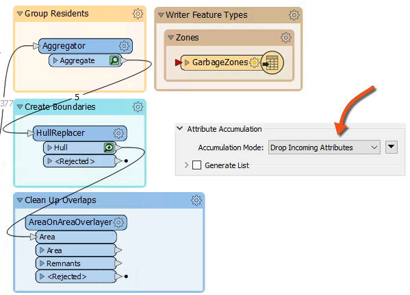
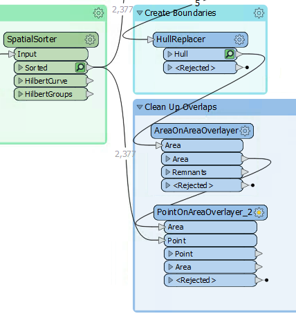
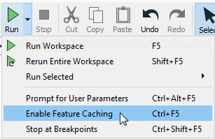
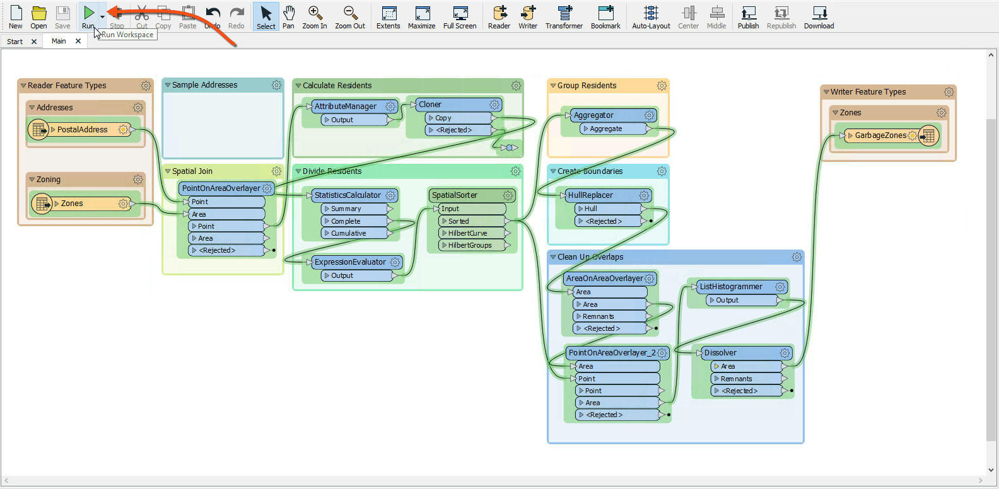

After completing this lesson, you’ll be able to:
Here, we conclude our project to redefine garbage collection schedules.
In the first two exercises, we used various transformers to divide addresses into five groups according to zoning type. Then, we wrote the data to Geopackage.
Now, the task is to replace the groups of point features with a polygon boundary.
1) Open Workspace
Open your workspace from the previous exercise.
If you gave that workspace a date or version number in its name, you should make a copy of it with a new one. For example, if you saved it to GarbageCollection-05-19-2023.fmw, then make a copy named GarbageCollection-05-20-2023.fmw and open that for editing.
Alternatively, you can open the starting workspace.
2) Run the Workspace
Run the workspace to finish writing out the data. You can inspect the output dataset if you desire by clicking on the GarbageZones writer feature type and then clicking on the View Written Data button in the popup menu:

3) Add a HullReplacer Transformer
Move the HullReplacer transformer from the "Transformers" bookmark into the "Create Boundaries" bookmark. Connect it between the Aggregator and writer feature type:

Notice how the HullReplacer has no cache because it is newly placed.
4) Re-Run the Workspace
Now, let's re-run the workspace. But rather than re-write the output data, we can run just the new transformer we added. Click on the HullReplacer transformer, and on the icons that pop up, click Run To This:

Notice how hovering shows what parts of the workspace will be run. Since we already have features cached to the Aggregator (assuming you haven't closed the workspace since it was last run), only the section between the Aggregator and the HullReplacer will be run.
Using the Run To This option is an excellent method to check your translation before writing the data out, especially if you are writing to a database or an online source.
Note that the Run button itself will default to only run sections of the workspace after valid caches, so in this case, it would have a similar effect. The only additional step it would take is writing the data again.
Click on the cached features on the HullReplacer's Hull output port. The output now includes polygons, proving that the translation has functioned correctly:

5) Clean Up Overlaps
The problem with the output is the polygons overlap. That needs to be fixed so that there are no overlaps. Moreover, we should check which zone an overlap belongs to by seeing which group contains the most addresses.
We can accomplish this last step using the transformers in the Clean Up Overlaps bookmark below the Transformers bookmark.
6) Add an AreaOnAreaOverlayer Transformer
Add the AreaOnAreaOverlayer from the Clean Up Overlaps bookmark. Connect it to the HullReplacer transformer. We will use it to break the overlaps down into their component parts.

7) Add a PointOnAreaOverlayer Transformer
The overlaps are now separate features, but we must determine which area to assign them. It should have the most addresses; for example, if an overlap contains 31 addresses from group one and 52 addresses from group two, it should be assigned to the group two polygon.
We can start on this by using a PointOnAreaOverlayer. This transformer will let us create a list of which addresses an overlap contains.
So, add a PointOnAreaOverlayer transformer. The area features will be the output from the AreaOnAreaOverlayer.
The point features should be a copy of the addresses. The simplest way to get these is to make a second connection from the SpatialSorter:

8) Add a ListHistogrammer Transformer
To count the most frequent GroupID for each list on an overlap, we'll use the ListHistogrammer transformer.
This is not a commonly used transformer, so don't worry if you weren't aware of it or if you are concerned about the large number of transformers available in FME. You will learn more about these transformers with practice. For now, the ability to use partial runs is much more critical.
Place a ListHistogrammer transformer connected to the PointOnAreaOverlayer's Area output port.

Re-run the workspace (from the ListHistogrammer). Now we have a list on each polygon where the first element tells us which group is most prevalent.
9) Add a Dissolver Transformer
Finally, add a Dissolver transformer to merge the features based on the most prevalent gorup. Connect the Dissolver to the ListHistogrammer output port:

Run the workspace to the Dissolver and inspect the Dissolver's Area output port:

We now have five polygon features to represent garbage collection areas, each with approximately the same number of residents. Connect the Dissolver's Area port to the writer feature type; this workspace is nearly complete.
10) Remove the Sampler Transformer
To complete the project, let's run the workspace on the entire dataset, but first, let's get the workspace ready for production.
Delete the Sampler transformer, ensuring that PostalAddress and the PointOnAreaOverlayer's Point input port are connected.
Instead of deleting the Sampler, you can disable it. Right-click on the Sampler and choose Disable, then connect the PostalAddress and PointOnAreaOverlayer like the above step. If you need to come back and tweak something, the dataset can be sampled again easily.
Before we run the translations, let's disable feature caching as the PostalAddress dataset is large. Click on the dropdown next to the Run button and click Enable Feature Cache to disable it:

Now, with feature caching disabled, the Run button will run the entire workspace:

As expected, the result will look different now that we're using the entire dataset: